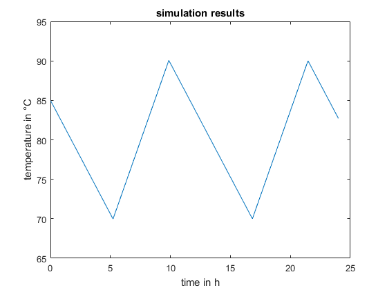

Import and use an FMU for Model Exchange in a MATLAB script
This script demonstrates how to:
- import an FMU for Model Exchange (FMI version 2.0) in a MATLAB script
- instantiate and initialize and FMU
- get/set values from/to an FMU in a simulation loop
Contents
Load the FMI++ interface
fmippPath = getenv( 'MATLAB_FMIPP_ROOT' ); addpath( genpath( fullfile( fmippPath, 'packages' ) ) );
Import the FMU
% Specify the FMU's model name. model_name = 'ControlledRadiator'; % Specify the path to the extracted (unzipped) FMU. uri_to_extracted_fmu = 'file:///C:/Development/matlab-fmipp/tutorial/import/ControlledRadiator'; % Specify the FMU's configuration parameters. logging_on = fmippim.fmi2True(); % Turn verbosity on/off. stop_before_event = false; % Do not stop integration when internal events occur. event_search_precision = 1e-2; % Set precision for searching for events. integrator_type = fmippim.bdf(); % Specify Sundials CVODE solver (Backward Differentiation Formula). % Import the FMU. fmu = fmippim.FMUModelExchangeV2( uri_to_extracted_fmu, ... model_name, logging_on, stop_before_event, ... event_search_precision, integrator_type );
Instantiate and initialize the FMU
% Instantiate the FMU. status = fmu.instantiate( 'controlled_radiator1' ); if status ~= fmippim.fmiOK(); error( 'instantiation not successful' ); end % Initialize the FMU. status = fmu.initialize(); if status ~= fmippim.fmiOK(); error( 'initialization not successful' ); end
Run a simulation
% Specify default step size of one integration step and the internal integrator step size. stepsize = 60; integrator_stepsize = stepsize/10; % Specify the simulation time and simulation stop time. t = 0; tstop = 24 * 60 * 60; % Specify upper and lower threshold of hysteresis controller. Tlow = 70; Thigh = 90; % For storing results. result = []; % Simulation loop. while t < tstop % Integrate the model. t = fmu.integrate( t + stepsize, integrator_stepsize ); % Retrieve value for output variable T. T = fmu.getRealValue( 'T' ); % Hysteresis controller. if ( T >= Thigh ) fmu.setRealValue( 'Pheat', 0.0 ); % turn off heating elseif ( T <= Tlow ) fmu.setRealValue( 'Pheat', 1e3 ); % turn on heating end result = vertcat( result, [ t/3600 T ] ); end
Plot the results
plot( result(:,1), result(:,2) ); title( 'simulation results' ); xlabel( 'time in h' ); ylabel( 'temperature in °C' );